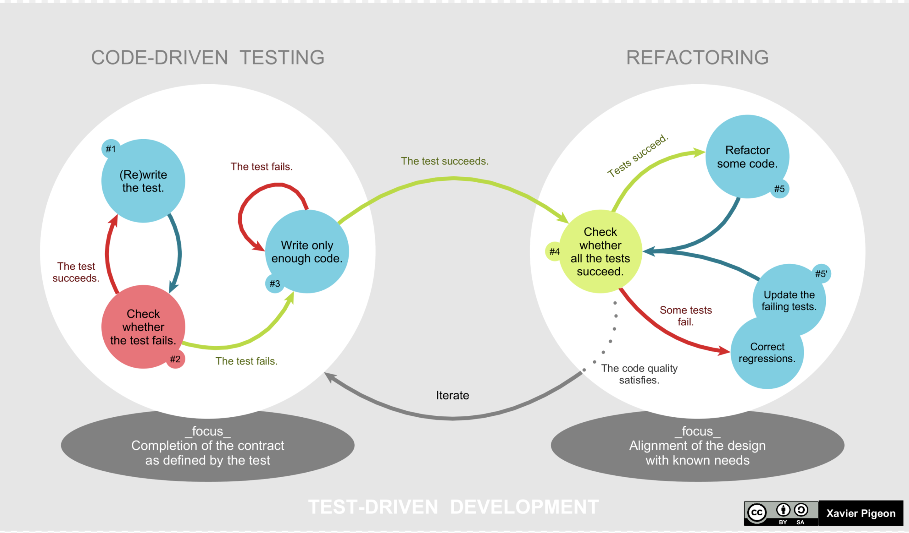

常見開發流程
TDD
- TDD（Test-Driven Development）是一種開發流程，中文是「測試驅動開發」。
- 用一句白話形容，就是「先寫測試再開發」。
- 先寫測試除了能確保測試程式的撰寫，且有助於在開發初期釐清程式介面，如何設計。
具體來說，TDD 流程可以分成五個步驟
- 選定一個功能，新增測試案例
- 執行測試，得到 Failed（紅燈）
- 實作「夠用」的產品程式
- 再次執行測試，得到 Passed（綠燈)
- 重構程式

參考文獻
BDD
為什麼需要 BDD？
- TDD 是一種軟體開發流程，先測試再開發。
- TDD 所實作的測試程式碼，可以作為工程師之間討論測試案例或使用情境的基礎
- 但是對非開發人員很難透過程式碼，去理解測試案例，也更難根據測試案例，進一步討論軟體的功能。
什麼是 BDD？
- BDD 想解決的問題是鼓勵技術人員跟非技術人員，一同參與測試計畫的定義。
- BDD 框架皆支援 Gherkin 語法，這是一種簡單易懂的語言，使用關鍵字來定義系統特徵和測試。
- TDD 是實作前先寫測試，BDD 比 TDD 更進一步在寫測試前，還要先寫測試規格。
- 這份測試規格會用更接近人類語意的方式描述軟體功能和測試案例
- 這份規格並不是單純的敘述軟體的功能，而是一份「可以被執行的規格」，也就是可以被轉成自動化測試。
https://behave.readthedocs.io/en/stable/gherkin.html
Gherkin 語法
And: * , 而且, 並且, 同時
Background: 背景
But: * , 但是
Examples: 例子
Feature: 功能
Given: * , 假如, 假設, 假定
Rule: Rule
Scenario: 場景, 劇本
Scenario Outline: 場景大綱, 劇本大綱
Then: * , 那麼
When: * , 當
BDD 常見的熱門框架
- behave: https://behave.readthedocs.io/en/stable/
- cucumber: https://cucumber.io/
- ...